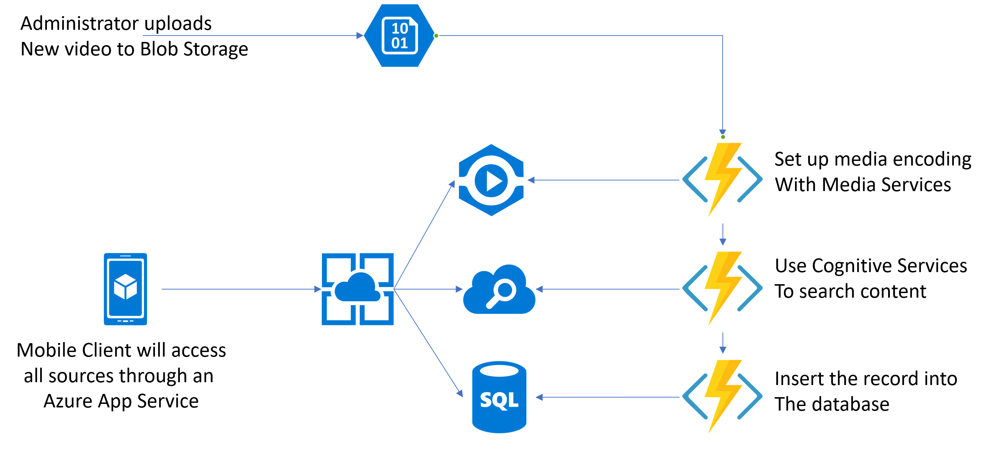
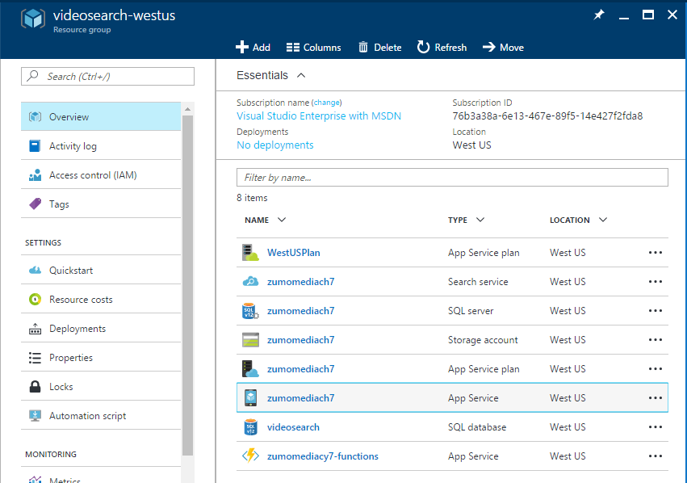
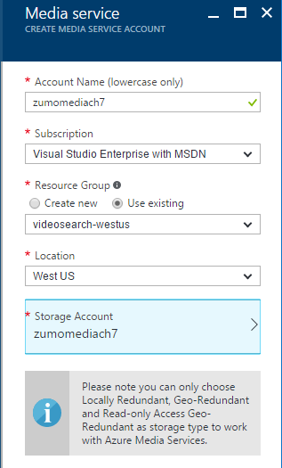

Azure Media Services¶
One of the common use cases for mobile applications involves video streaming. In the consumer space, this can include applications like Hulu or Netflix along with video reviews and new segments in apps like CNN and CNET. In the enterprise space, we see video learning and employee broadcast solutions.
Whatever their source, they have some basic functionality in common:
- The video asset is uploaded and converted (also known as encoding) to a streaming format.
- A live video channel can be provided for multiplex streaming to a large audience.
- The encoded video is provided to clients for download with a suitable web endpoint.
- Additional services extract information from the video for search capabilities.
Many enterprises wrap such functionality in a combined web and mobile site to provide streaming video for eLearning. We are going to look at what it takes to produce the mobile side of such a site in this section.
The Video Search Application with Media Services¶
We are going to produce a media services mobile application for this section, based on our last example for Azure Search. In the new example, this is the approximate flow of the application:

The administrator will upload an MP4 video via the Visual Studio Storage Explorer. This will be automatically picked up by an Azure Function that encode the video, placing the encoded video into a download area. The next Azure Function will pick up that video and use Cognitive Services on it to extract information that can be searched and insert that information into the Azure Search instance. Finally, a third Azure Function will insert the data about the video into a database so that it can be picked up by Azure Mobile Apps. We are going to use three distinct operations here because encoding and cognitive services are asynchronous - we want to kick them off and let them complete in their own time.
On the client side, we will use the Azure Search instance to find apps, display the information held within Azure Mobile Apps, and allow the user to stream the video using the video player.
As you can see, there are many more services in use in this example than our previous examples:
- Azure Media Services is used for video encoding and streaming endpoints.
- Azure Logic Apps is used for workflow automation.
- Azure Functions are used for automated individual steps.
- Cognitive Services are used to extract information from the videos.
- Azure App Service is used to act as a coordinator for the mobile app.
- Azure Search is used as our full text search engine.
- Azure Storage is used to store the individual video assets and for some queuing capabilities.
- SQL Azure is used as the backing store for the Azure Mobile Apps data store.
This is now a fairly typical mobile application. We are using 8 different Azure services in a composite manner to provide the facilities needed by our application.
Creating the Mobile Encoding flow¶
When I look at the architecture for our mobile backend, I see two distinct parts. The first is the backend flow that processes the incoming videos. As videos are uploaded, they need to be injected into a queue. From there, a series of processes are kicked off to process the incoming video. First, the video is encoded; then data is extracted from the video for search purposes; finally, the video is added to the SQL database so it can be searched.
The other flow is from the mobile client - it connects to the App Service and makes requests based on what it needs to do. In this case, we have a set of data tables for providing data about the video and a few custom APIs for handling search and video streaming.
Let's take each of these in turn. The configuration of most of the services have already been discussed, so I will not go over them and only provide the options I used. This includes Storage, Search, SQL Azure, and Functions.
Creating pre-requisite services¶
Before I start with the new services, I need an Azure Storage account, an Azure Search instance and an Azure Function App. I've covered all these items in previous sections, so I won't go into them here. The configuration is as follows:
- My Azure Storage account called
zumomediach7.core.windows.netas General Purpose storage with LRS replication. - My Azure Search instance called
zumomediach7.search.windows.netin the Free pricing tier. - My Azure Functions app called
zumomediach7-functions.azurewebsites.netin the Consumption Plan. I'm using myzumomediach7storage account. - My SQL Azure service is called
zumomediach7.database.windows.net. - My SQL Azure database is called
videosearchin the B Basic pricing plan. - My Azure App Service is created via the Mobile App template and called
zumomediach7.azurewebsites.net. It has an B1 Basic app service plan associated with it.
In addition, I've linked the SQL Azure database and storage accounts to the App Service via the Data Connections menu option. I've also added a query key to my Azure Search instance and provided a pair of App Settings in the App Service - SEARCH_APIKEY holds the query key and SEARCH_ENDPOINT holds the URI of my service.
Our resource group looks quite extensive now:

Configuration for the services is as follows:
Azure Storage has a container for incoming videos called incoming.
Azure Search has an index with the following fields:
| Field Name | Type | Attributes |
|---|---|---|
| videoId | Edm.String | Key, Retrievable |
| audio | Edm.String | Retrievable, Filterable, Searchable |
The audio field is new and will be populated with the textual content from analysis of the video.
Azure App Service has a basic TableController which is based on the following DTO model:
using Microsoft.Azure.Mobile.Server;
namespace Backend.DataObjects
{
public class Video : EntityData
{
public string Filename { get; set; }
public string VideoUri { get; set; }
}
}
I also have a custom API that returns my search settings. I'll add any settings I need to transmit to my mobile app into this same controller so that they can easily be retrieved from the mobile app:
using System;
using System.Web.Http;
using Microsoft.Azure.Mobile.Server.Config;
namespace Backend.Controllers
{
[MobileAppController]
public class SettingsController : ApiController
{
private Controllers.Settings _pSettings;
public SettingsController()
{
_pSettings = new Controllers.Settings
{
SearchApiKey = Environment.GetEnvironmentVariable("SEARCH_APIKEY"),
SearchEndpoint = Environment.GetEnvironmentVariable("SEARCH_ENDPOINT")
};
}
// GET api/Settings
public Controllers.Settings Get()
{
return _pSettings;
}
}
public class Settings
{
public string SearchEndpoint { get; set; }
public string SearchApiKey { get; set; }
}
}
This encompasses information from the majority of the book thus far. If you are uncertain on how to perform any of this configuration, review the appropriate sections of the book:
- Chapter 1 covers creating a Mobile App.
- Chapter 4 covers Azure Functions.
- This chapter covers Azure Search.
Creating an Azure Media Services account¶
So far, we've done a lot of infrastructure work. We've generated an Azure Mobile App that our mobile app can use to retrieve information about the videos, generated an Azure Search instance with a suitable index, and a storage account for processing the videos. We now want to move onto the meat of this section - working with video. In order to do that, we will need an Azure Media Services account.
Creating an Azure Media Services account is very similar to other Azure resources. Log in to the [Azure Portal] and open the resource group you are using to hold all the resources for this application.
- Click + ADD to add a resource to the resource group.
- Search for Media Services, select it, then click on Create.
- Fill in the form:
- Select a name for your service. It needs to be unique within the service.
- Select your existing storage account (note the limitations on the replication policy if you use your own).
- Ensure the region matches your storage account and other resources.
- Click Create.

The Media Services accounts may take a couple of minutes to create. Do not continue until the deployment is complete.
Testing tools for Media Services
If you intend to do any development in Azure Media Services, you should download and become familiar with the Azure Media Services Explorer. this is a test tool for Windows that allows you to upload, download, process, encode and package assets ith Azure Media Services. You should also grow a collection of test videos. A great starting point are these videos from TechSlides.
You could stop here and do all the work manually. If you wish to check out the full set of tutorials, follow the official documentation:
The Azure Functions¶
Now that I have a Media Services account, I need to set up the Azure Functions App so that my Functions can access the various resources. Specifically, I need access to the Azure Storage connection string (which we will deal with later) and the Media Services account information. Just like an Azure Storage account, we need an account name and a key. We created the account name during the creation of the Media Services resource. To get the account key:
- Open the resource group, then open the Media Services resource.
- Click Account keys in the left hand menu.
- Copy the PRIMARY KEY into your clipboard.
Azure App Service underpins both Azure Mobile Apps and Azure Functions. You can set application settings in the portal and they appear as environment variables in your code. To set the appropriate application settings:
- Open the resource group, then open the Function App.
- Click Function app settings at the bottom left of the window.
- Click the Configure app settings button.
- Scroll down to the App settings area.
- Enter MediaServicesAccountName in the key box, and the name of your Media Services account in the value box.
- A new line will appear. Enter MediaServicesAccountKey in the new key box, and the primary key you copied above in the new value box.
- Click Save.
- Close the Application settings blade.
Let's get back to the process I am trying to implement. When a user uploads a video file into the incoming container within Azure Storage, I need to automatically:
- Create a Media Services Asset.
- Copy the incoming video into the Asset blob.
- Synchronize the Asset blob with Media Services.
- Submit an encoding job.
- Wait for the encoding job to be complete.
- Publish the Asset.
- Insert the URL for the published asset into the Mobile Apps database.
Media encoding jobs can take a long time, and Azure Functions have finite running times, so we will need to work around this by checking the job on a regular basis. As a result, we are going to have several small functions.
Example Functions for Media Services
Azure Media Services provides a number of resources in the Azure-Samples repository. Most of the samples provided here were adapted from this GitHub repository. I particularly like the Logic Apps edition of the encoding pipeline as it provides a visual understanding of the process.
Let's take a look at the first step. I'm creating an Azure Function called create-media-asset.
To Be Continued
This section is not complete as yet. Please check back soon!